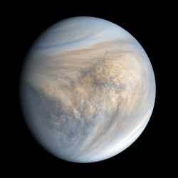
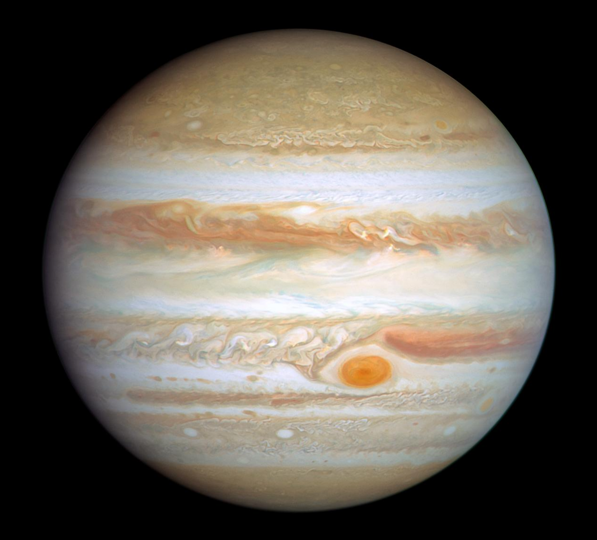
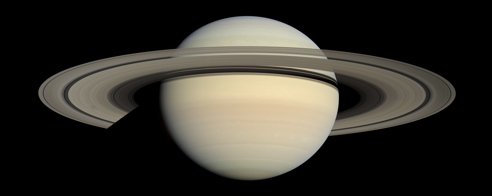
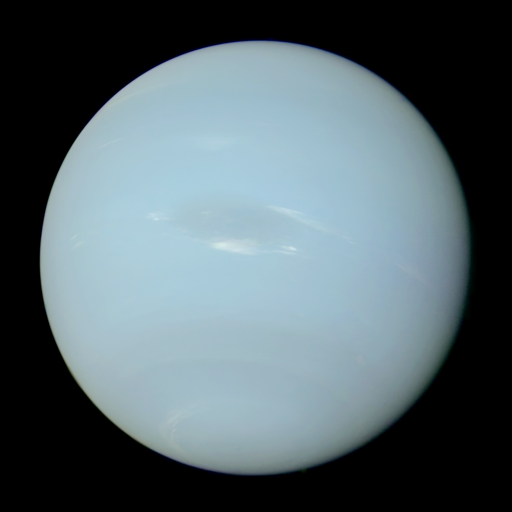

The Sun was discovered to be in the center of the Solar System in 1543.

Mercury was discovered around 3,000 BCE and is the first planet from the Sun.

Venus was discovered
In 1610 but since it shone brightest in the sky, humans have always known it was there. Its also the second planet from the Sun.

The Earth was discovered whenever we got there hundreds of thousands of years ago. The third planet from the Sun.

Mars does not have a specifc date, it was discovered because it too has been visible for at least 4,000 years. The fourth planet from the Sun.

Jupiter was discovered as early as the 7th century BCE, and is the fifth planet from the Sun.

Saturn doesnt have a single discovery year, but it was first observed through a telescope in 1610 and is the sixth planet from the Sun.

Uranus was discovered as a planet back in 1781, and is the seventh planet from the Sun.

Neptune was discovered as a planet on September 23rd, 1846, and is the eighth planet from the Sun.